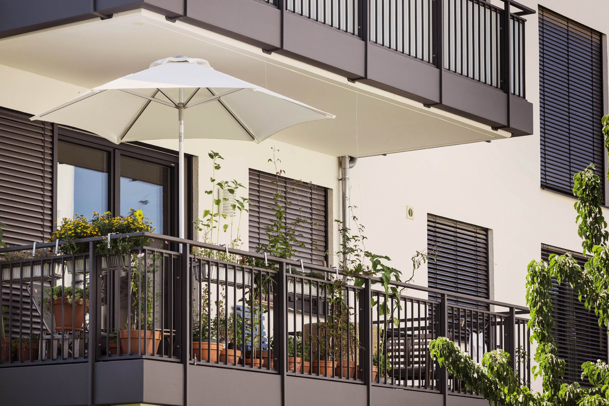
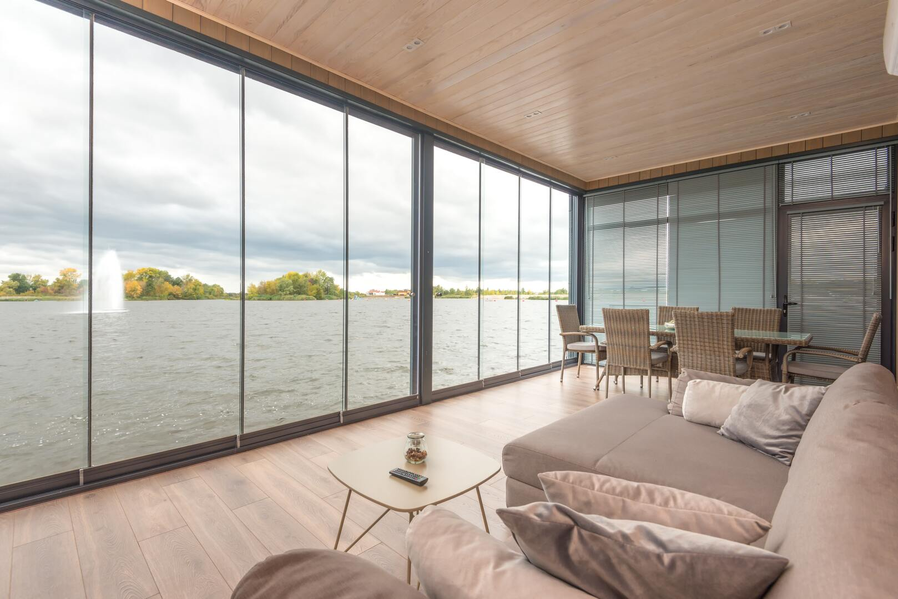
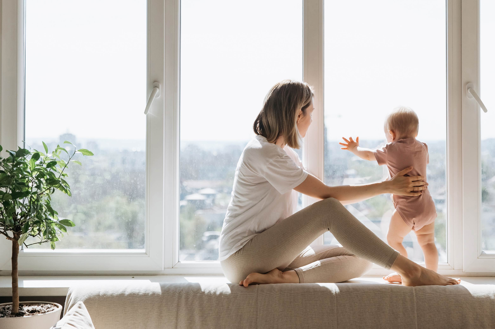
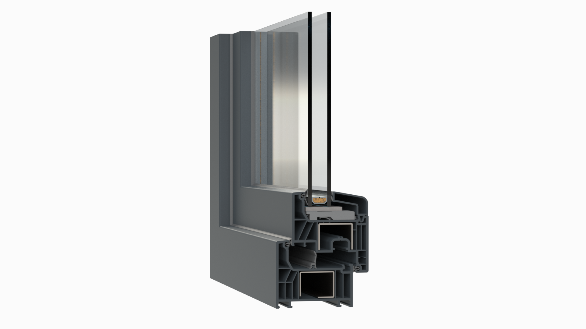

Kurumsal
Pencereden bakışınızı değiştiren işler üretiyoruz. Mert Pen'i yakından tanıyın.


Mert Pen kimdir?
Mert Pen; İzmir Karşıyaka merkezli, PVC kapı ve pencere sistemleri alanında hizmet veren bir doğrama firmasıdır. Türkiye'nin önde gelen PVC profil markalarından Egepen Deceuninck'in sistemleriyle çalışıyor, her projeyi ölçüye özel olarak üretip kendi ekibimizle monte ediyoruz.
Konutlardan iş yerlerine, balkon kapatmadan geniş sürme kapılara kadar her işte aynı ilkeyle hareket ediyoruz: doğru ürünü, doğru ölçüyle, temiz bir montajla teslim etmek. Müşterilerimizin evine yalnızca bir pencere değil; ısı, ses ve güvenlik konforu taşıdığımızın bilincindeyiz.
Keşiften teslimata kadar her adımda şeffaf fiyat, zamanında teslim ve satış sonrası destek sunuyor; Karşıyaka, Bayraklı, Çiğli, Bornova ve tüm İzmir'e hizmet veriyoruz.
5 adımda yeni pencereleriniz
Süreci baştan sona biz yönetiyoruz; siz sadece sonucun keyfini çıkarın.
Keşif Talep Et1. Ücretsiz Keşif
Adresinize gelir, ölçü alır, ihtiyaçlarınızı dinleriz.
2. Sistem & Renk Seçimi
Legend, Zendow, sürme veya cam balkon; bütçenize uygun seçeneği birlikte belirleriz.
3. Net Fiyat Teklifi
Sürpriz maliyet olmadan, kalem kalem şeffaf teklif sunarız.
4. Üretim & Montaj
Ölçüye özel üretilen doğramalarınız, eski doğrama sökümüyle birlikte temiz şekilde monte edilir.
5. Satış Sonrası Destek
Ayar, bakım ve tüm sorularınız için her zaman ulaşabilirsiniz.
Nereye gidiyoruz?
Vizyonumuz
İzmir'de PVC doğrama denildiğinde akla gelen ilk isimlerden biri olmak; kalite, güven ve müşteri memnuniyetinde bölgenin referans firması haline gelmek.
Misyonumuz
Egepen Deceuninck'in yüksek performanslı sistemlerini doğru işçilikle birleştirerek evlere ve iş yerlerine enerji tasarrufu, konfor ve estetik kazandırmak.
Egepen Deceuninck
Egepen Deceuninck, 1937'de Belçika'da kurulan ve bugün dünya genelinde PVC pencere ve kapı sistemleri üreten Deceuninck grubunun Türkiye'deki markasıdır. İzmir Menemen'deki üretim tesislerinde geliştirilen profiller, Türkiye'nin yanı sıra pek çok ülkeye ulaşmaktadır.
Mert Pen olarak ürettiğimiz tüm pencere ve kapılarda Egepen Deceuninck profillerini kullanıyor; markanın yalıtım, dayanıklılık ve çevre dostu üretim anlayışını müşterilerimize ulaştırıyoruz.


İşimizi böyle yapıyoruz

Müşteri Odaklılık
Her evin ihtiyacı farklı. Dinliyor, anlıyor ve size özel çözüm üretiyoruz.

Kalite & İşçilik
Birinci sınıf profil, kaliteli aksesuar ve özenli montaj; kalitede taviz yok.
Dürüstlük & Şeffaflık
Net fiyat, net teslim tarihi. Söz verdiğimiz işi söz verdiğimiz gibi yaparız.

Akıllı yatırım: PVC doğrama
- Enerji tasarrufuÇok odacıklı yapı ısı kaybını azaltır, ısınma ve soğutma giderlerini düşürür.
- Bakım gerektirmezBoya, cila istemez; nemli bir bezle temizlemek yeterlidir.
- Uzun ömürGüneşe, neme ve çürümeye karşı dayanıklıdır; ilk günkü görünümünü korur.
- Geri dönüştürülebilirKullanım ömrünü tamamlayan PVC yeniden profile dönüştürülebilir.